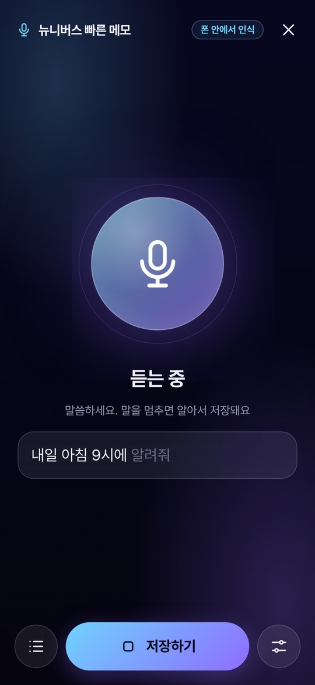
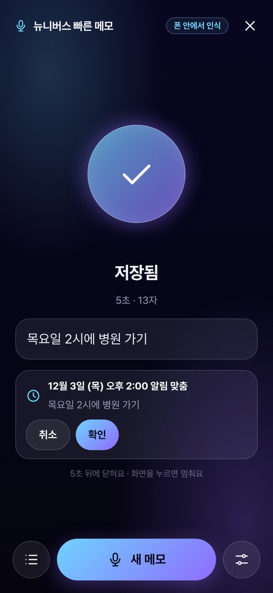
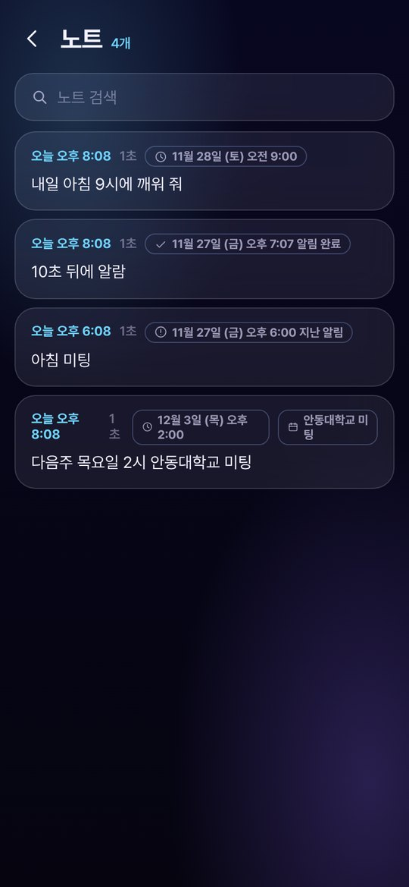
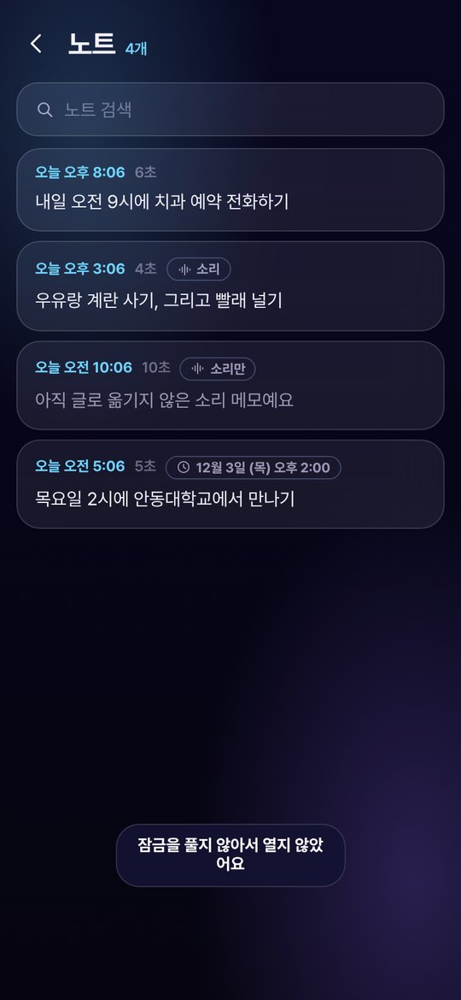
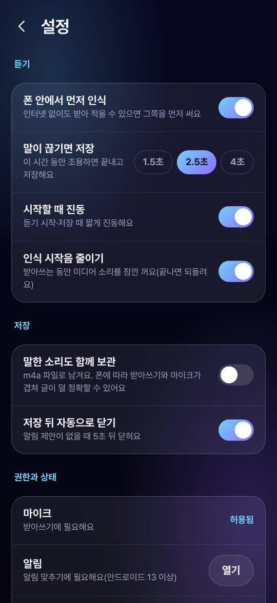

뉴니버스 빠른 메모 v4 (시험판)
버전 4-test · 뉴니버스 고정 서명(런처·전화·문자·설정·계산기와 같은 서명) · 인터넷 권한 없음
내려받기 · 뉴니버스 빠른 메모 v4 (약 0.13MB)
v3에서 바뀐 점
- 일정처럼 들리는 메모(날짜·시각과 함께 미팅·약속·모임·만나·봐·보자·회의·병원·예약·일정이 있거나, 장소+시각)는 묻지 않고 달력에 넣어요. 제목은 때 말을 뺀 나머지이고, ‘서/에서/앞에서’ 앞의 이름은 장소로 넣어요. 시각이 있으면 한 시간짜리, 시각이 없으면 하루 종일 일정이에요.
- 알림도 지금처럼 맞춰 둬요. 「깨워 줘」「N분 뒤 알려 줘」「알람」처럼 알림만인 말은 달력에 넣지 않아요.
- 넣은 뒤에는 「달력에 넣음 · 12월 3일 (목) 오후 2:00 안동대학교 미팅」 카드를 보여 줘요. 취소를 누르면 달력 일정만 지우고 메모는 남아요. 잠금 화면 위에서도 돼요.
- 달력은 문자 앱이 쓰는 것과 같은 뉴니버스 달력에 넣어요. (보이도록 표시되어 삼성·구글 달력 앱에서 볼 수 있어요.)
- 잠금을 푼 뒤 처음 열면 달력 권한을 한 번 물어요. 잠금 화면에서 권한이 없으면 메모는 저장하고 「달력 권한 필요」라고 표시해요. 목록에는 달력에 넣은 메모에 달력 아이콘이 보여요. 설정 화면의 기록에 달력 결과도 남아요.
이런 앱이에요
- 깜박하기 전에 말로 바로 남기는 메모예요. 앱이 열리자마자 저절로 듣기 시작해서, 말하는 대로 한국어로 받아 적고 저장해요. 따로 누를 게 없어요.
- 폰 옆면 버튼을 두 번 누르게 설정해 두면, 화면이 꺼져 있어도 · 잠금 화면에서도 바로 메모가 시작돼요. 짧게 진동으로 시작을 알려요.
- 잠깐 쉬어도 계속 들어요. 말이 끝나거나 약 2.5초 조용하거나 화면의 저장을 누르면 끝나고 저장돼요.
- 시간 말이 들어 있으면 저장과 함께 알림을 맞춰요. 일정 말까지 있으면 달력에도 넣어요.
- 예전 메모 목록은 폰 잠금을 풀어야 볼 수 있어요. 검색 · 복사 · 공유 · 삭제도 돼요.
- 받아쓰기를 쓸 수 없으면 소리만 저장해 두고 나중에 글로 옮길 수 있게 해요.
1. 설치하기
- 이 폰의 크롬에서 위 내려받기 → 내 파일 › 다운로드 › newniverse-memo-v4-test.apk → (출처 허용) → 설치.
- 이전 시험판을 깔아 두셨으면 지우지 말고 그대로 덮어 깔면 돼요. 메모는 그대로 남아요.
2. 처음 한 번은 화면을 켜고 열어서 허용하기
중요: 첫 실행은 잠금을 푼 상태에서 앱 목록의 뉴니버스 빠른 메모 아이콘으로 열어 주세요. 허용 창이 잠금 화면 위에서는 뜨지 않을 수 있어요.
- 마이크 허용 — 「앱 사용 중에만 허용」을 고르세요.
- Google 음성 인식 안내가 뜨면 동의하세요.
- 알림 허용(안드로이드 13 이상) — 잠금을 푼 뒤 처음 열면 한 번 물어요.
- 달력 허용 — 일정 메모를 달력에 넣으려면 필요해요. 잠금을 푼 뒤 처음 열면 한 번 물어요.
- 알람 및 리마인더 허용(정확한 알람) — 안 켜도 쓸 수 있지만, 알림이 몇 분 어긋날 수 있어요.
- 잠자는 앱 · 배터리 — 삼성 갤럭시는 설정 › 배터리 › 백그라운드 사용 제한(잠자는 앱)에서 뉴니버스 빠른 메모를 빼 주세요.
- 인터넷 없이 쓰는 한국어 받아쓰기 — 설정 › 일반 › 언어팩에서 한국어를 받아 두세요.
3. 옆면 버튼 두 번 → 뉴니버스 빠른 메모 열기
아래 메뉴 이름은 대략적인 안내예요. 삼성 갤럭시는 기종과 One UI 버전(8 포함)마다 이름과 위치가 조금 달라요.
- 설정 앱을 열어요.
- 유용한 기능(영어 화면: Advanced features)을 눌러요.
- 측면 버튼(Side button)을 눌러요.
- 두 번 누르기(Double press)를 켜요.
- 그 아래 앱 열기(Open app)를 고르고, 옆의 톱니바퀴를 눌러요.
- 앱 목록에서 뉴니버스 빠른 메모를 골라요.
못 찾겠다면: 화면 맨 위를 아래로 두 번 쓸어 내려 빠른 설정을 펼치고, 오른쪽 위 전원 단추 → 측면 버튼 설정으로도 들어갈 수 있어요. 설정 앱 위쪽 검색창에 「측면 버튼」이라고 쳐도 돼요.
4. 시험해 보기 (순서대로)
- 「다음주 목요일 2시 안동대학교 미팅」이라고 말해 보세요. 알림이 맞춰지고, 「달력에 넣음 · … 안동대학교 미팅」 카드가 떠야 해요. 삼성·구글 달력 앱의 뉴니버스 달력에도 보여야 해요. 취소를 누르면 달력에서만 빠지고 메모는 남아요.
- 「내일 10시에 나한테 전화하라고 말해 줘」「30분 뒤 알려줘」는 알림만 맞추고 달력에는 넣지 않아야 해요.
- 「모레 저녁 7시 친구 만나」「금요일 오전 11시 병원 예약」은 달력과 알림이 둘 다 되어야 해요.
- 잠금 화면에서 일정을 말했는데 달력 권한이 없으면, 메모는 저장되고 「달력 권한 필요」가 보여야 해요.
- 목록에서 달력에 넣은 메모에 달력 아이콘이 보이는지, 설정 › 기록에 달력 결과가 남는지도 봐 주세요.
- v3에서 확인한 「10초 뒤에 알람」, 옆면 버튼, 비행기 모드·잠금 화면도 그대로 되는지만 가볍게 봐 주세요.
시험판이에요. 안 되는 것은 폰 기종 · One UI 버전 · 어느 단계에서 어떻게 됐는지(화면 사진이면 더 좋아요)를 알려 주세요.
화면





화면은 시험 환경에서 만든 예시예요.